Summary
Java Emitter Templates, JET, provides an expressive and powerful mechanism for generating arbitrary text files. It's effectively Java turned inside out. To generate a text file with Java, one would express the textual results using string literals, and string-producing logic, embedded in a Java class. To generate a text file with JET, the template itself is the literal while Java logic to control what's generated is embedded in, or invoked from, this template. In the end, a JET template is simply compiled into a Java class, inverting the literals and the Java logic.
JET is provided by the Eclipse Modeling Framework (EMF) and is used extensively in EMF's code generation framework to implement Java code generation. As of EMF 2.19, a specialized JET editor is provided for editing templates much like how one edits Java files in Eclipse. In fact, the JET editor contains an embedded Java editor to help provide support for content assist, quick assist, refactoring, and formatting. The JET compiler and JET builder have also been significantly enhanced for improved fault tolerance and diagnostic support.
Getting Started
Configuring a JET Project
Creating a Root JET Template
Creating an @jet Directive
JET Color Preferences
JET Literal Content
Creating a Driver
Creating a Model
Creating a Scriptlet
Creating an Expression
Exploiting the Outline with Tag Comments
Creating a Header Comment
Generating Interesting Results
Creating More Complex Scriptlet Logic
Formatting a Multi-line @jet Directive
Creating More Complex Scriptlet and Expression Logic
More Interesting Results
Dealing with Multi-line Content
Exploiting Inclusion for Reuse
Editing Multiple Documents in a Single Editor
Generating Included Results
Specialization Using a Skeleton Class
Using Additional @jet Attributes
Fully Exploiting all the Features of the JET Editor
Support and Problem Reporting
Before creating your first JET template, the appropriate EMF JET plug-ins need to be installed.
They are available from EMF's Update Site.
You can use Help → Install New Software…, copy and paste the preceding update site link, and search for "EMF Code Generation UI" as follows:
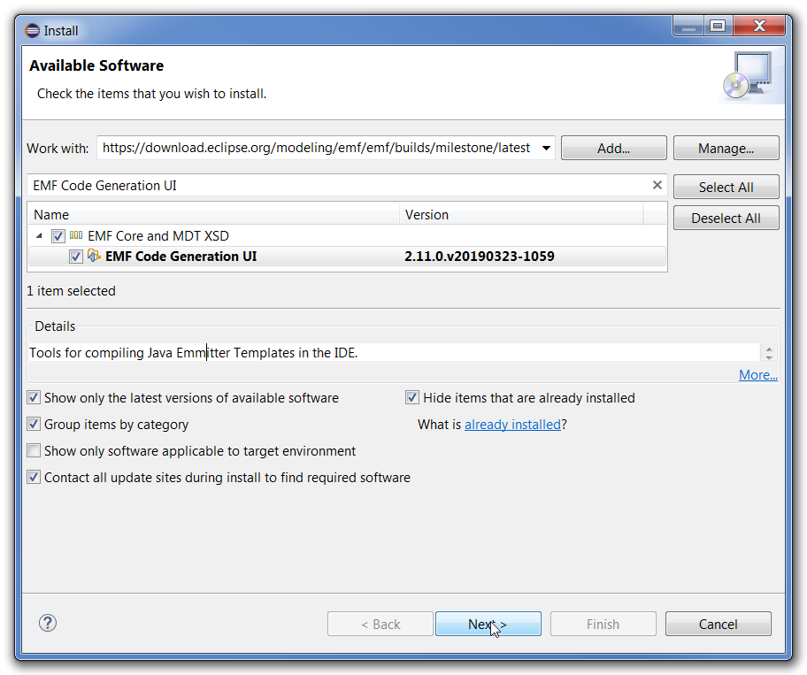
In general, a file is recognized as a JET template if its file extension ends with jet. It must be a UTF-8 encoding text file. By convention, the file extension of the type of text file being generated can be specified either in the file extension or separately, e.g., *.html.jet or *.htmljet can be specified to indicate that the template generates HTML results.
To compile your JET templates, you will need to convert a normal Java project to a JET project, to add the JET Nature and associated JET Builder. From the context menu of a Java project in the Package explorer, use New → Other...… as follows: 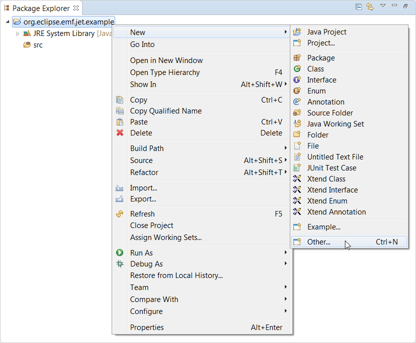
This brings up New wizard, where you can type JET in the search field to find the JET conversion wizard as follows:
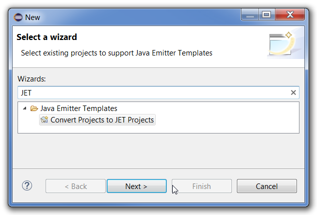
When you hit Next, a list of Java projects that don't yet have a JET nature will be presented and the project of the context menu will already be check marked:
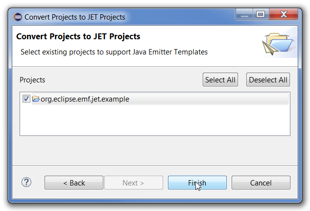
When you hit Finish, the Properties dialog for the JET Settings will be displayed as follows:

A templates folder will have been created and the Template Containers will refer to that. The Source Container will automatically be the first Java source folder of the Java project. You may wish to create a separate Java source folder for the compiled templates if you wish. All root JET templates in the templates folder will automatically be compiled as they are changed. You can bring up this dialog again any time from the context menu of the project via Properties…
Now you are ready to create a JET template using New → File from the context menu of the templates folder: 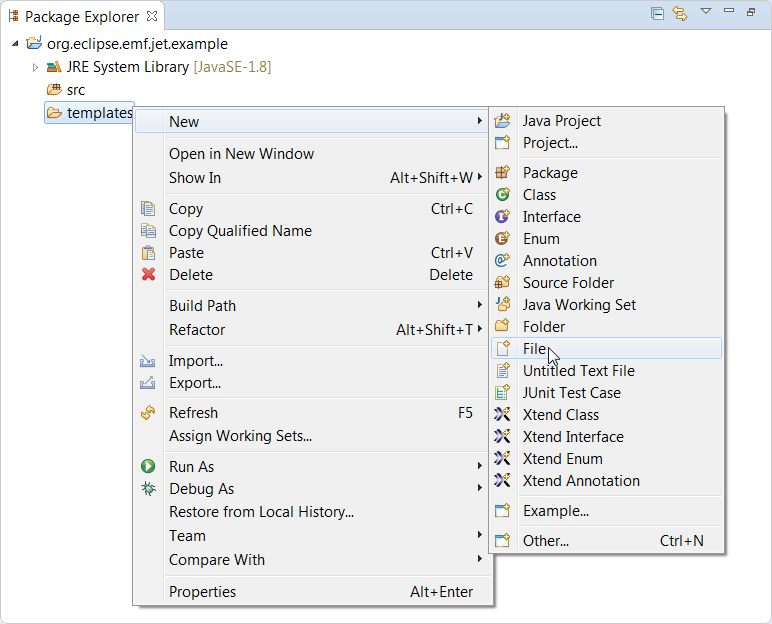
Create the file index.html.jet as follows:
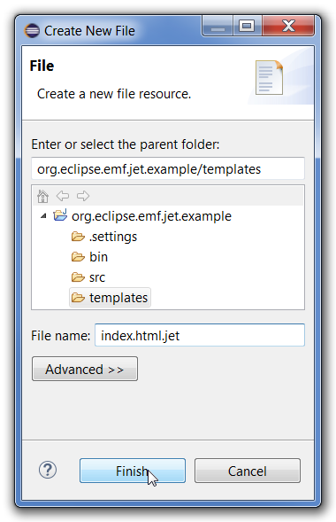
Creating this file will automatically open the JET editor. Because the template is empty, it will be marked as an error, both in the editor and the workspace. Hovering over the annotation will indicate what's wrong: 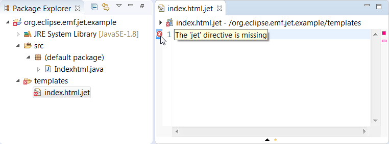
Note that despite the error, the template has nevertheless been compiled to produce Indexhtml.java in the project's source folder.
The JET editor supports content assist, so hit Ctrl-Space for completion suggestions: 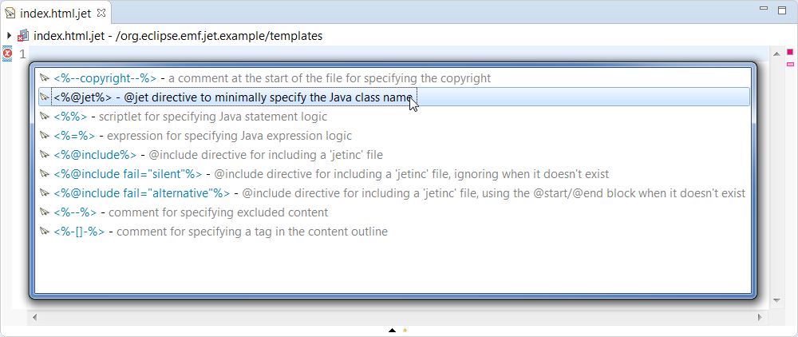
In the content assist dialog, you can now see the complete syntax of the language! It really is very simple. You can use this to create the necessary @jet directive: 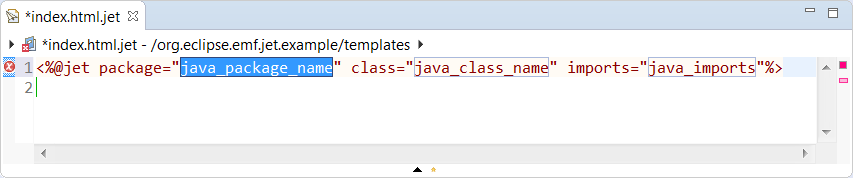
You can give it the package name org.eclipse.emf.jet, the class name Index, and clear the imports for now until you need them. Then you can save the result to make the workspace free of errors. To inspect the compiled result, you can click on the arrow on the divider at the bottom on the editor (see the mouse cursor below) to inspect the following result: 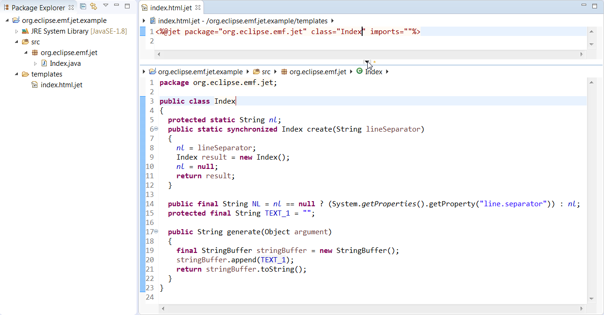
The selection and the cursor are synchronized between the template part of the editor and the Java part of the editor. E.g., in the above image, you can see the cursor in the template is after the Index as is the cursor indicator in the Java part. You generally won't need to concern yourself with this, but it's interesting and can be useful when you have errors in the compiled Java class, though even in that case, the markers will be displayed in the template itself. If you look closely, you'll see that the Java part is styled with background colors based on where from the template that part of the Java is derived, i.e., at this point just the package name and the class name.
Speaking of colors,
a complex JET template can be quite difficult to read without help syntax highlighting.
Of course you can choose your own color scheme via JET Color Preferences… on the context menu:
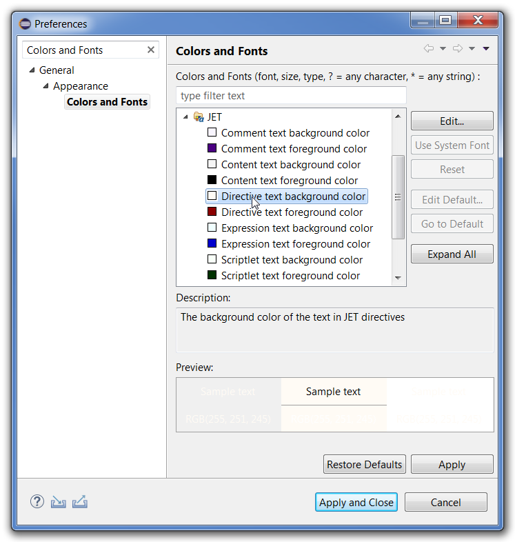
You can now define the content that the template should generate, i.e., a very simple HTML page that you can copy and paste into the editor from the following:
<!DOCTYPE html> <html> <head> <title>Title</title> </head> <body <h1>Heading</h1> <p>Paragraph.</p> </body> </html>
The editor will now look like this: 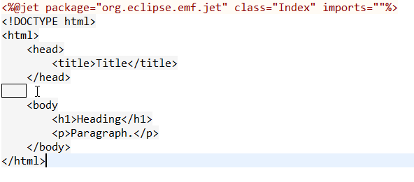
Note in particular that the editor styles any trailing whitespace in literal content with a bounding box. You will generally not want your template to generate results with trailing whitespace. You can remove such things manually, but the formatter will do that automatically, so try hitting Ctrl-Shift-F now.
You can now create a simple driver to generate this template's result and print it to the Console. Copy and paste the following class to the src folder in the Package Explorer, and from the context menu of this new class, use Run As → Java Application.
package org.eclipse.emf.jet.util;
import org.eclipse.emf.jet.Index;
public class IndexTest {
public static void main(String[] args) {
System.out.print(Index.create("\n").generate(null));
}
}
Of course at this point, it's completely uninteresting, except maybe for the fact that we can opt to generate the results using the line delimiter of our choice. In general a template will generate results based on the argument that's passed to the generate method. To improve the readability of the template, it's a best practice to externalize as much of the Java logic as possible. You can create a simple model to drive what's generated for this template. Copy and past the following simple model to the src folder.
package org.eclipse.emf.jet.util;
import java.util.ArrayList;
import java.util.List;
public class IndexModel {
public static final IndexModel SAMPLE_INSTANCE = new IndexModel("Sample Title");
static {
List<Section> sections = SAMPLE_INSTANCE.getSections();
Section sectionOne = new Section("Sample Section One");
sections.add(sectionOne);
sectionOne.getContent().add(new Section.Paragraph("This is sample section one.\nIt has multi-line content."));
Section sectionTwo = new Section("Sample Section Two");
sections.add(sectionTwo);
sectionTwo.getContent().add(new Section.Paragraph("This is sample section two."));
sectionTwo.getContent().add(new Section.Paragraph("This is sample section has two paragraphs."));
}
private String title;
private List<Section> sections = new ArrayList<Section>();
public IndexModel(String title) {
this.title = title;
}
public String getTitle() {
return title;
}
public List<Section> getSections() {
return sections;
}
public static class Section {
private String heading;
private List<Content> content = new ArrayList<Content>();
public Section(String heading) {
this.heading = heading;
}
public String getHeading() {
return heading;
}
public List<Content> getContent() {
return content;
}
public static class Content {
}
public static class Paragraph extends Content {
private String text;
public Paragraph(String text) {
this.text = text;
}
public String getText() {
return text;
}
}
}
}
Now you can create your first scriptlet.
Start a new line before the <!DOCTYPE html> and hit Ctrl-Space.

Alternatively, you can just type <% and the closing %> will automatically be inserted. The JET editor generally supports smart completion to properly close off a starting tag. Note that scriptlets are styled in green, by default.
To use the model class in the template, start typing its name and hit Ctrl-Space again: 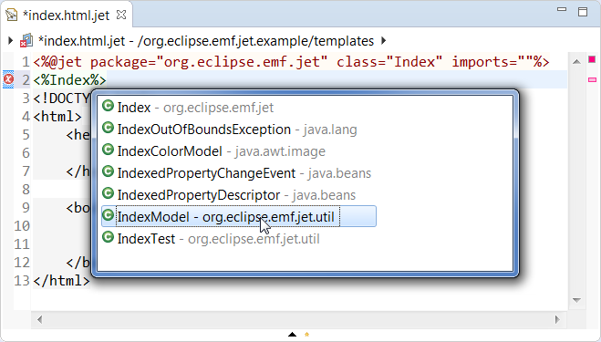
In general, Java content assist and quick assist will work in the templates when working within the scriplets. So you can quickly complete a suggested name for the new variable, lookup the arguments parameter of the generate method that's in scope, and use quick assist to add the cast to produce the following result: 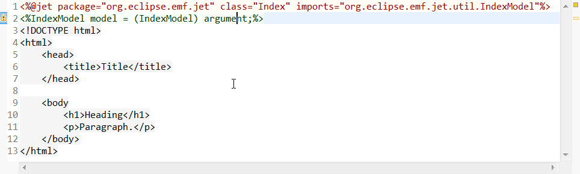
Note that an import of IndexModel class was automatically added to the imports of the @jet directive, and that problem markers in the compiled Java are mapped back to the template. Here we have a warning about the as-yet unused variable.
Now you can use this new variable to replace the Title with your first JET expression. Delete the Title and type <%= and the %> is of course inserted automatically. Then type m and hit Ctrl-Space. 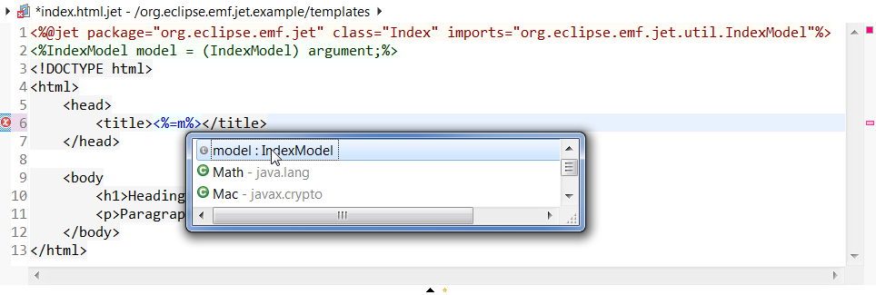
When you make this completion, as soon as you enter ., the content assist will give you to option to choose getTitle() so that you end up with <%=model.getTitle()%>. Note that expressions are styled blue by default. Here's how the editor with its Outline appears: 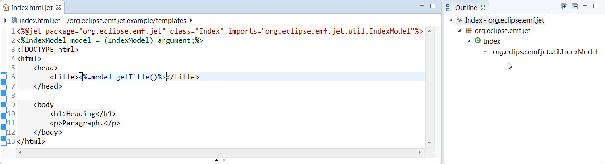
The outline is mostly useful for more complex templates with @include directives.
But even in a very large template without @include directives, the outline can be made more useful by including specialized JET comments in your template to create so-called tags.
You can add a tag comment on a new line before the <head> HTML tag:

Change the Tag to Head and it will appear in the outline as follows: 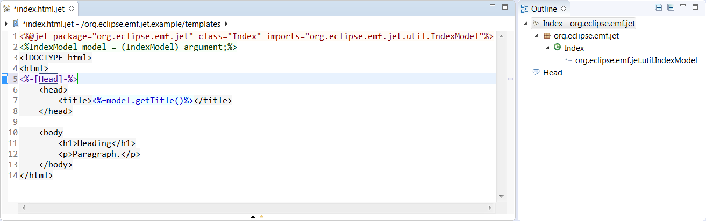
With this approach you can exploit the outline to make it easy to locate sections in large templates. Selections in the outline will of course select the corresponding element in the editor.
JET comments can of course be used to "comment out" sections of your template just as you would use /* */ to comment out sections of Java code. You can even use a special form of such a comment as the first line of your template. Type Ctrl-Space at the start of the first line in the template: 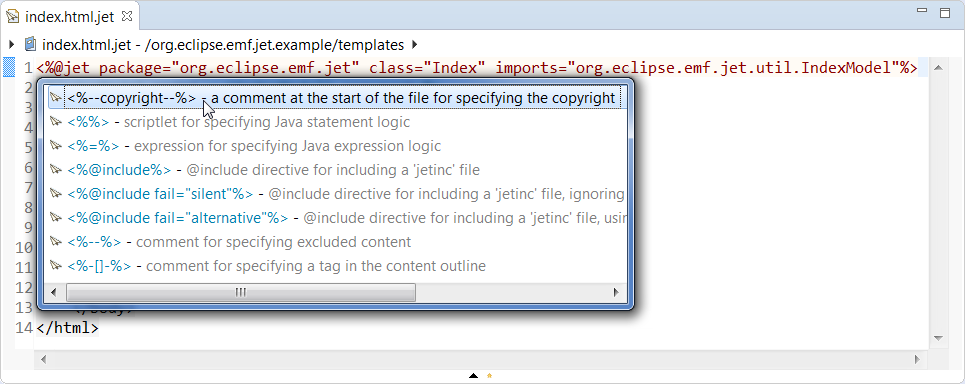
If the first line of a template has a comment of the form <%--⏎Content⏎--%>, i.e., the content starts and ends with a line delimiter, this content will be used to generate a Java comment at the start of the compiled template: 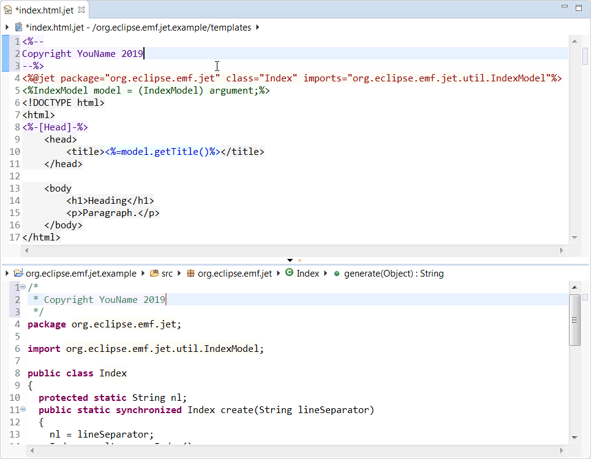
Now your can test drive your model-driven template by calling the generator with the sample instance from the model. I.e., change the IndexText.java too look like this:
package org.eclipse.emf.jet.util;
import org.eclipse.emf.jet.Index;
public class IndexTest {
public static void main(String[] args) {
System.out.print(Index.create("\n").generate(IndexModel.SAMPLE_INSTANCE));
}
}
Running it will produce the following with SampleTitle from the sample model:
<!DOCTYPE html> <html> <head> <title>Sample Title</title> </head> <body <h1>Heading</h1> <p>Paragraph.</p> </body> </html>
You can now enhance the template to generate the body from the model. Enter <%model.getSections();%> on a line before the <h1> HTML tag and use Ctrl-Shift-1 to create a for-each loop: 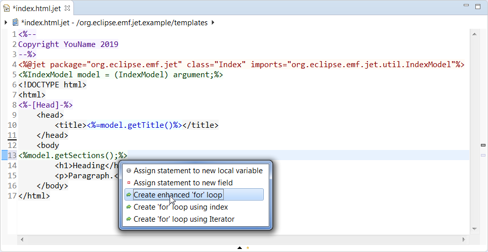
The following is the result, including the import of the Section class in the @jet directive: 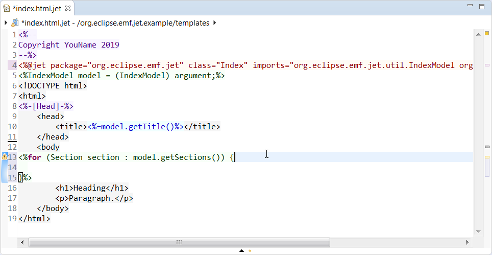
With many imports the @jet directive can get very long. But if you add a line break into the imports section, the imports will be formatted on separate files, and they will be sorted. So add a line break between the imports—quoted strings can span multiple lines in JET templates—and enter Ctrl-Shift-F to produce the following. 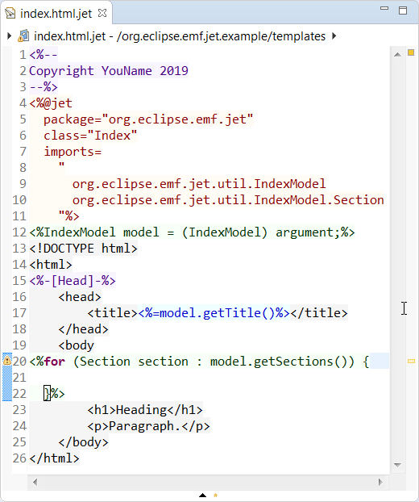
When you enter %> after the {, the smart insert will insert a <% before the closing corresponding }. Now move the closing <%}%> to appear after the <p> HTML tag's line. 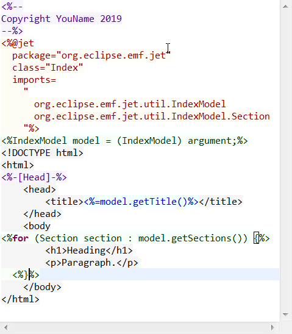
Note that the JET editor, like the Java editor, highlights matching brackets and supports Ctrl-Shift-P to jump between matching brackets.
You can now edit the template to use the section's title and to iterate over the section contents to find the ones that are paragraphs, and use the paragraph's text in the template. 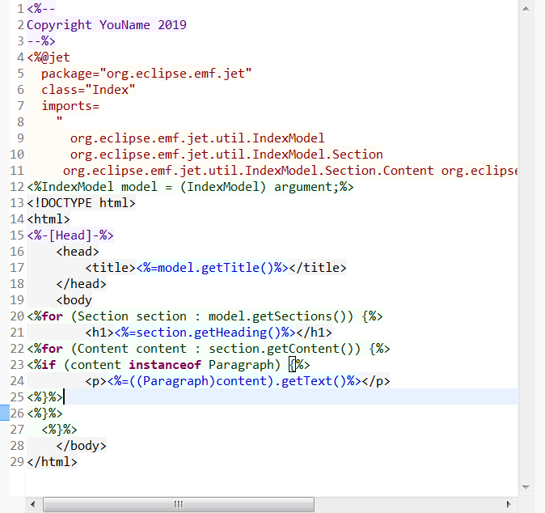
It's kind of messy formatting, but hit Ctrl-Shift-F to make it pretty again. 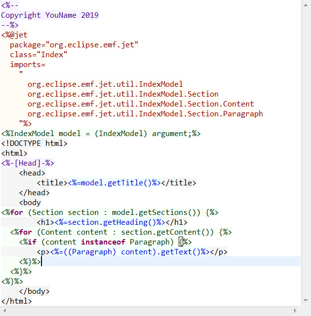
The scriptlets have been indented to match the indentation they would have in Java. Note that generally your Java formatting preferences will be used. However spaces will always be used instead of tabs, and braces will always be at the end of each line to make the template more compact.
Your can run our IndexTest again to see the result:
<!DOCTYPE html> <html> <head> <title>Sample Title</title> </head> <body <h1>Sample Section One</h1> <p>This is sample section one. It has multi-line content.</p> <h1>Sample Section Two</h1> <p>This is sample section two.</p> <p>This is sample section has two paragraphs.</p> </body> </html>
So that's all working well, except it's not so pretty how a multi-line paragraph's text is formatted. Also, if you think about it, the line delimiters of the inserted paragraph may not match the line delimiters used in the template. We can create a little utility to deal with all that. But before we do, let's change the compiled Java to use a StringBuilder instead of a StringBuffer. Enter a new line in the @jet directive and hit Ctrl-Space 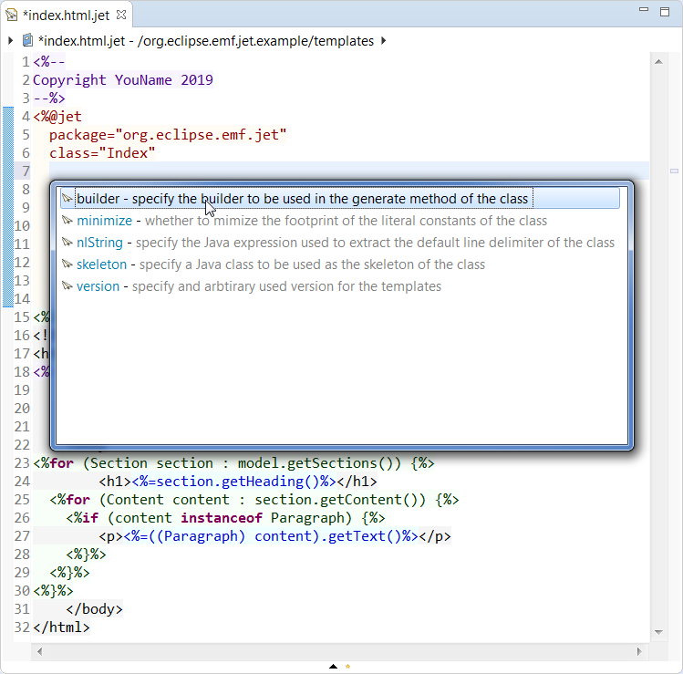
With the builder attribute, you can control the type and the name of the builder. It can be any type that supports append for any arbitrarily typed argument. The compiled template now looks like this: 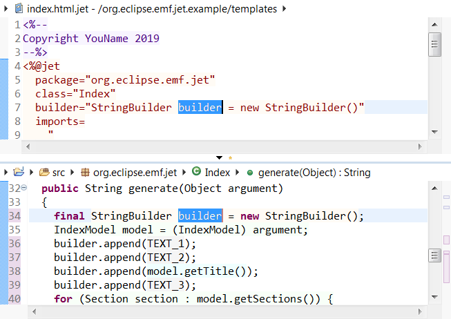
The following utility class can be used to format multi-line comment so that it adjust the content to the current indentation in the builder. Copy and paste it into the src folder.
package org.eclipse.emf.jet.util;
import java.util.regex.Matcher;
import java.util.regex.Pattern;
public final class TemplateUtil {
private static final Pattern INDENTATION_PATTERN = Pattern.compile("\r?\n.*$");
private static final Pattern LINE_PATTERN = Pattern.compile("(\r?\n)");
public static String format(StringBuilder builder, String text) {
Matcher matcher = INDENTATION_PATTERN.matcher(builder.toString());
if (!matcher.find()) {
throw new RuntimeException("This cannot be used on the first line of a template's content");
}
String lineDelimiterIndentation = matcher.group();
return LINE_PATTERN.matcher(text).replaceAll(lineDelimiterIndentation);
}
}
You can modify the template to use it, using content completion to import the name and formatting the result so that the template looks like this: 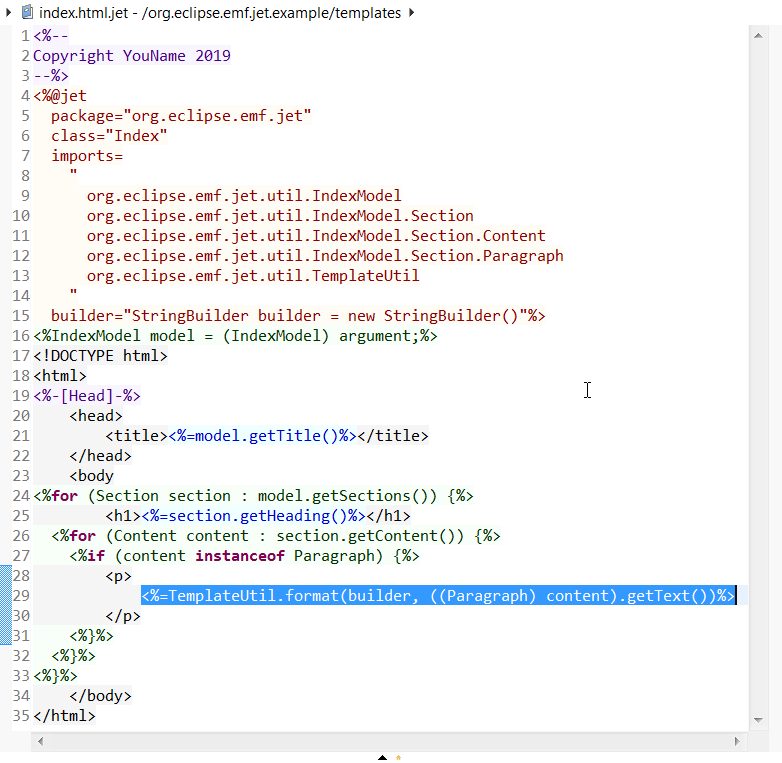
Now we can see that it produces a prettier result:
<!DOCTYPE html> <html> <head> <title>Sample Title</title> </head> <body <h1>Sample Section One</h1> <p> This is sample section one. It has multi-line content. </p> <h1>Sample Section Two</h1> <p> This is sample section two. </p> <p> This is sample section has two paragraphs. </p> </body> </html>
Consider if you have multiple templates for generating different types of HTML pages and you wanted to include common content in the <head> HTML tag of each of them. You could use an @include directive for that. First create a new file in the template folder named head.html.jetinc. This is recognized as a JET template, though not a top-level template but rather one that is included by another template. The editor will open like this:
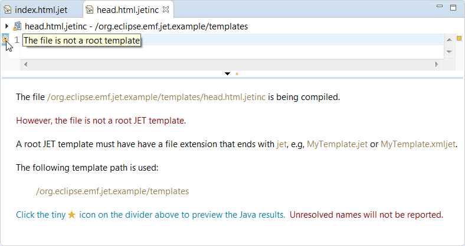
There will always be a warning in such a non-root template to let you know that this will not be compiled to a Java class. Furthermore, the information control will be displayed with details. This control is always available (even in root templates) via the tiny yellow star next to the down arrow on the divider. Despite not being compiled by the JET Builder, the editor nevertheless does compile it in-memory to an artificial Java class so that basic Java syntax errors will be detected and diagnosed. You can see that here reflected even in the Package Explorer: 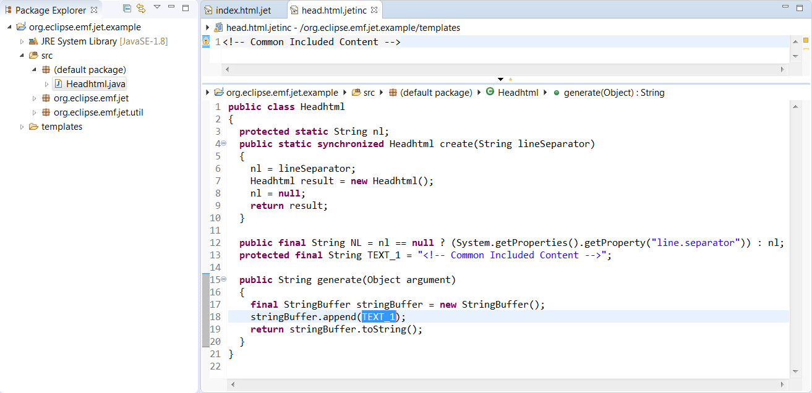
You can now include this template in the original template, inserting a line after the <title> HTML tag and using Ctrl-Space to choose a simple @include directive. The include directive will be displayed in the outline as follows: 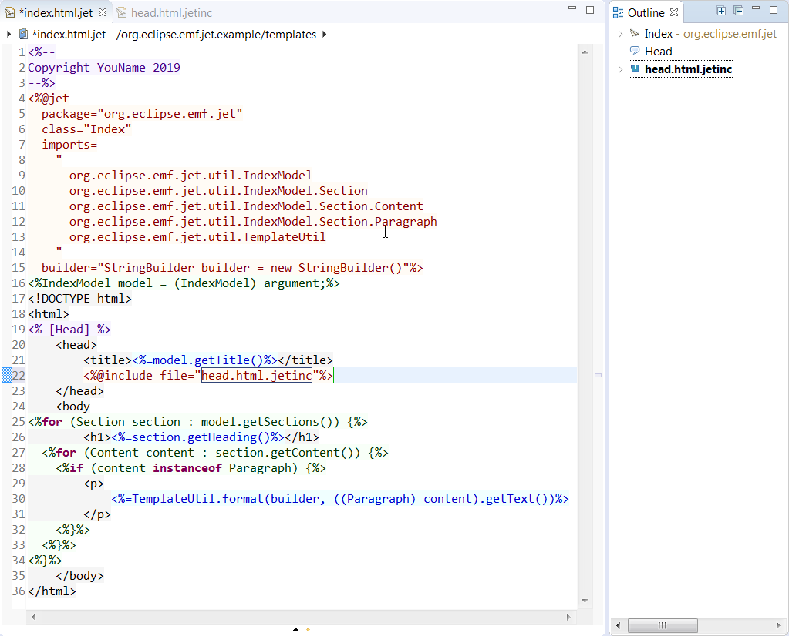
You can edit the included template in the editor of the including template. This is very useful because the including template, in the general case, provides the context needed to make the included template semantically complete, i.e., in the general case that the included template contains scriptlets and expressions, that only resolve from the context of the including template. 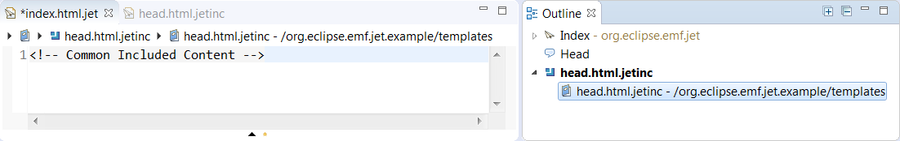
Note that the JET Builder keeps track of which templates include which other templates. This information is available in the editor for any included template and this information provides links for opening the editor for the including template: 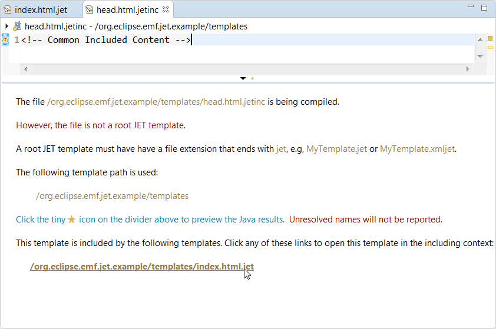
You can test the template again to see that the included content appears in the result:
<!DOCTYPE html> <html> <head> <title>Sample Title</title> <!-- Common Included Content --> </head> <body <h1>Sample Section One</h1> <p> This is sample section one. It has multi-line content. </p> <h1>Sample Section Two</h1> <p> This is sample section two. </p> <p> This is sample section has two paragraphs. </p> </body> </html>
Suppose you want to specialize some aspects of the compiled Java class, for example, to control arguments of the generate method. You can use the skeleton attribute in the @jet directive to reference a so-called skeleton. Create a file called Skeleton.java in the templates folder and paste the following skeleton into it:
public class CLASS
{
public String generate(IndexModel model)
{
}
}
Then use content assist to add a skeleton attribute to the @jet directive as follow: 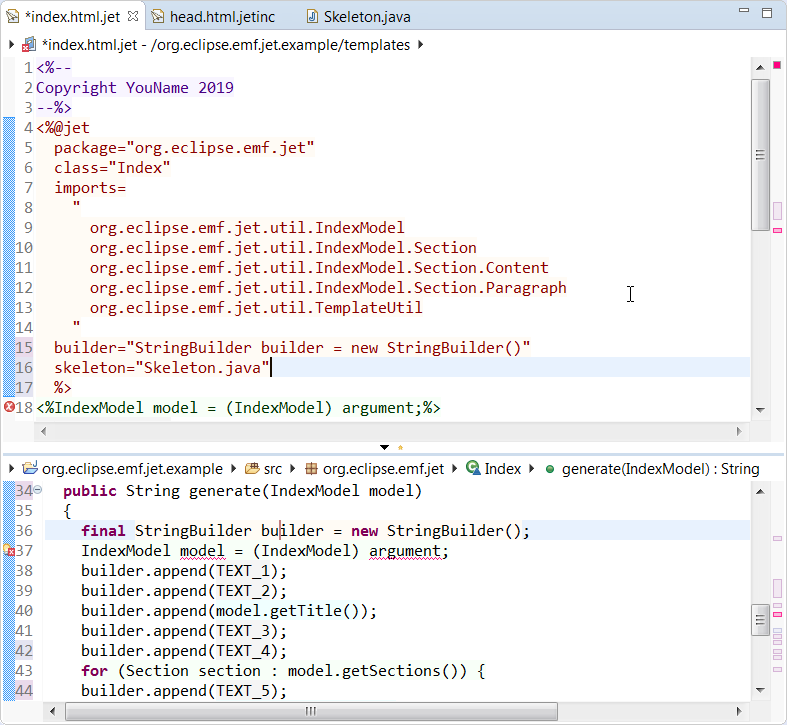
As you can see, the template now has an error. That's because it's compiled using your skeleton and the parameter is named model and is of type IndexModel. This makes your starting scriptlet not just redundant, but erroneous. Just delete it.
The name of the skeleton class is irrelevant and it's package declaration will be replaced; it must be public though. You could add Javadoc and define other fields, methods, or even nested classes in the skeleton if you wish.
To touch upon the remaining attributes of the @jet, namely nlString, minimize, and version here is an illustrative example: 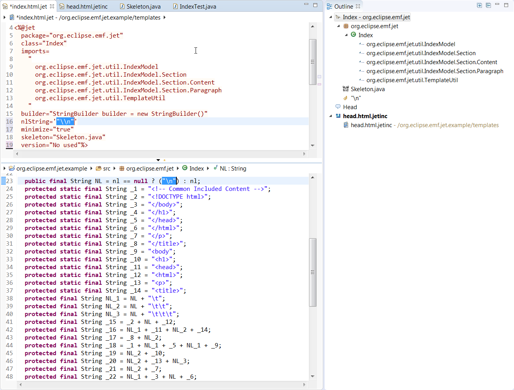
They have the following significance:
Note the completeness of the outline view in reflecting a summary of the contents of the editor and keep in mind that it can be used for navigation purposes, e.g, to edit the skeleton.
The JET editor supports a number of capabilities that we've not explorer yet, many that you might expect from working with the Java editor:
Please address questions to the EMF Forum prefixing the subject with [jet].
Please open problem reports using EMF's Bugzilla.